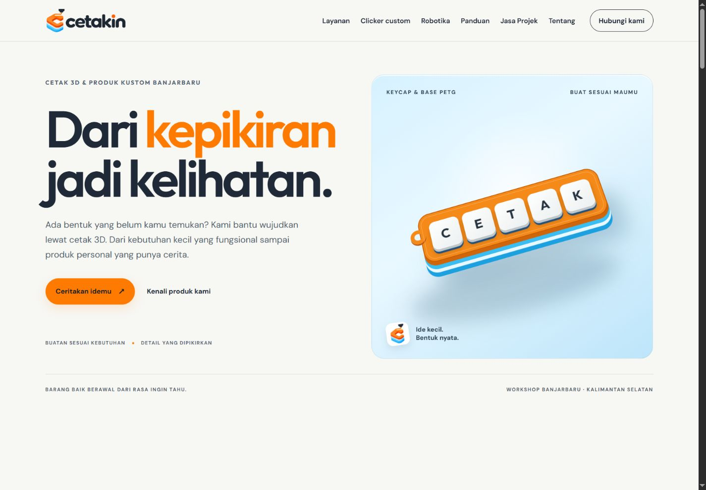
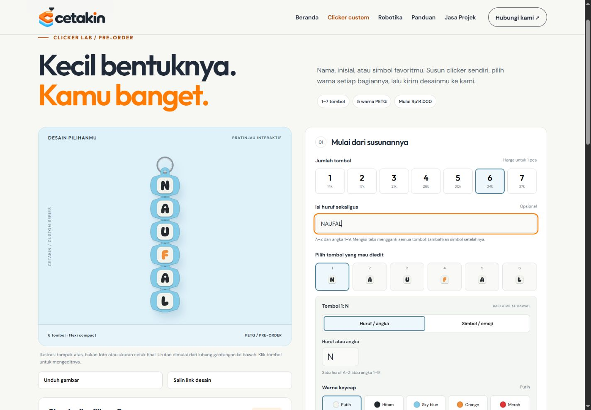
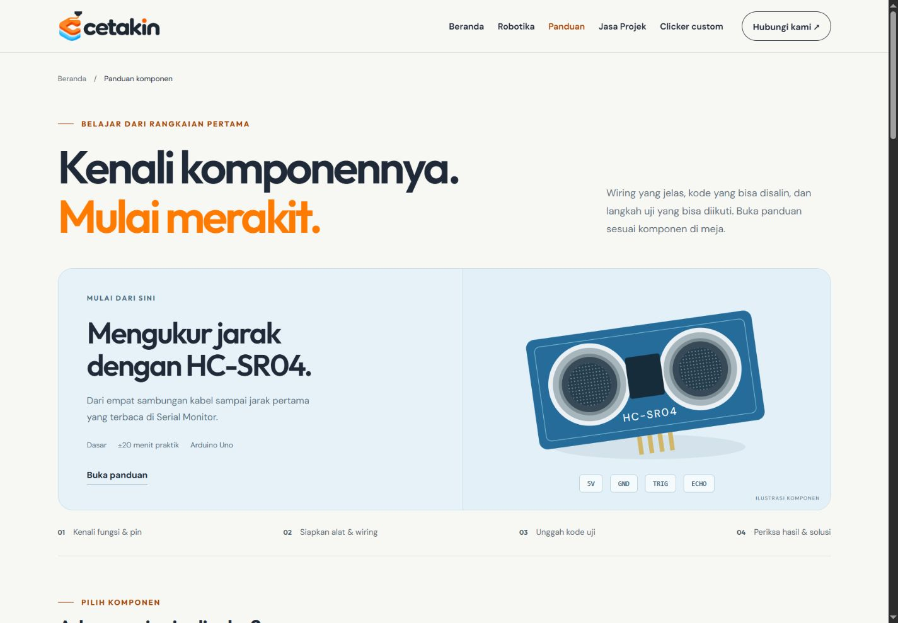

Usaha manufaktur digital & web
CetakIn
Dari ide produk menjadi barang cetak 3D. CetakIn menghubungkan layanan manufaktur, konfigurator produk, dan komponen robotika dalam satu website.
Tampilan aplikasi asli
Lihat langsung antarmukanya tanpa perlu membuka repositori.


Halaman utama & layanan
Tampilan asli halaman utama memperkenalkan layanan cetak 3D dan produk kustom CetakIn.


Clicker Lab yang sebenarnya
Konfigurator asli dengan desain contoh enam tombol. Pengunjung situs CetakIn dapat mengubah huruf, bentuk, warna, dan susunan melalui antarmuka ini.


Panduan komponen robotika
Halaman panduan asli membantu pengguna mempelajari komponen, wiring, kode uji, dan langkah pemeriksaan rangkaian.
Tangkapan layar diambil dari antarmuka aplikasi asli pada lingkungan lokal dengan data demo. Teks di dalam gambar mengikuti bahasa aplikasi.
Mengapa proyek ini dibuat?
Untuk siapa
Pelanggan cetak 3D, pembuat prototipe, dan penghobi robotika.
Masalahnya
Pelanggan perlu memahami layanan, menentukan bentuk produk, dan menjelaskan desainnya sebelum pesanan dapat diproses.
Pendekatannya
Website menampilkan layanan, menyediakan Clicker Lab untuk merancang gantungan kunci tombol, serta menyusun ringkasan desain untuk dibicarakan melalui WhatsApp.
Yang bisa dilakukan pengguna
-
Layanan cetak 3D
Membantu pelanggan mengenali layanan cetak kustom dan kebutuhan prototipe.
-
Clicker Lab
Konfigurasi bentuk, jumlah tombol, warna, dan simbol melalui browser.
-
Desain yang bisa dibagikan
Hasil konfigurasi dapat diekspor sebagai PNG atau dibagikan melalui tautan desain.
-
Katalog & panduan robotika
Komponen dilengkapi panduan rangkaian dan kode untuk membantu pengguna memulai.
Peran & lingkup pengerjaan
Co-Founder & pengembangan teknologi. Lingkup yang ditampilkan mencakup website pelanggan, konfigurator produk, serta sistem pengelolaan usaha.
Teknologi yang digunakan
- Node.js
- Express.js
- HTML / CSS / JavaScript
- Canvas 2D
- FDM 3D Printing
Tentang dokumentasi preview
Tangkapan layar dari website CetakIn asli yang dijalankan secara lokal. Halaman, stylesheet, dan skrip antarmuka memakai kode proyek; layanan produksi dan pemesanan tidak dihubungkan.